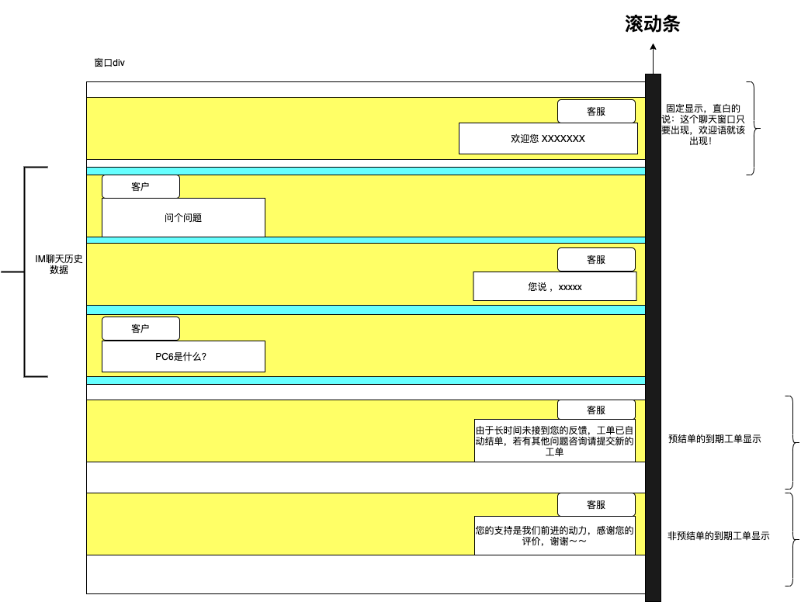

客服:XiuEr
欢迎您 XXXXXXX
------------------------------IM的聊天历史记录 start------------------------------
客户:ZhangYuFei
问个问题
客服:XiuEr
您说 ，xxxxx
客户:ZhangYuFei
PC6是什么？
------------------------------IM的聊天历史记录 end------------------------------
客服:XiuEr
由于长时间未接到您的反馈，工单已自动结单，若有其他问题咨询请提交新的工单
客服:XiuEr
您的支持是我们前进的动力，感谢您的评价，谢谢～～
/*** * @apiNote 此方法是在聊天窗口调取 * * */ function initChat() { //1. 与IM进行WebSocket连接 //2. 显示第一条 聊天数据, 往 class="chat_div" append 一条 div="欢迎您 XXXXXXX" //3. 发起请求从IM后端拿历史数据 //4. 便利IM的历史数据往 class="im_div" 的div中遍历 /** * 5. if (结单了并且是预结单导致的){ * (1) 往class="chat_div" append 一条div "由于长时间未接到您的反馈，工单已自动结单，若有其他问题咨询请提交新的工单" * (2) 发送按钮置灰色 * }else if (结单了并且不是预结单导致的){ * (1) 往class="chat_div" append 一条div "您的支持是我们前进的动力，感谢您的评价，谢谢～～" * (2) 发送按钮置灰色 * } * */ } /** * @apiNote 此方法是用于在线聊天客户端 */ function chattingClient() { //获取 //1. 现在页面上，往 class="im_div" append 一条div "你要发送的消息" //2. 往WebSocket发送消息 } /** * @apiNote 此方法用于在线聊天服务端 (实时接收消息) */ function chattingService() { //1. 只要接收到了消息，判断是谁发的消息？ //2. 往 clss = "im_div" ，append一条div "class = 'im_div 客户or客服"接收到的消息" }
